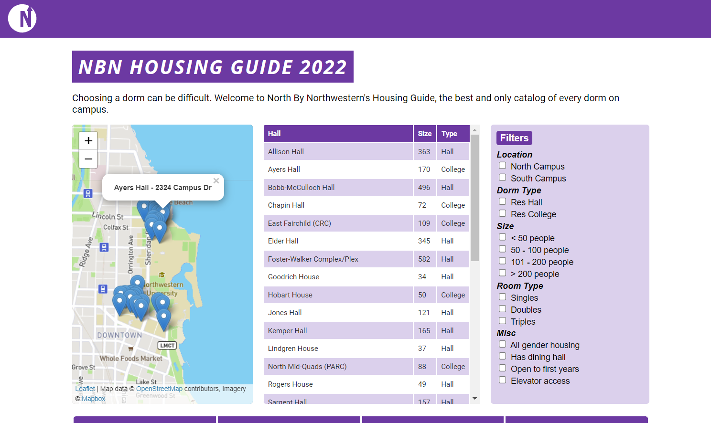

Housing Guide 2022
 < link to project >about
The North By Northwestern Housing Guide has been a very popular project for Northwestern students and is the most viewed and well-known project that the publication has published. The guide functions as a catalog of every student housing option on campus.
Team: Nathanial Ortiz and Olivia Lloyd (my co-editor, best friend, and great journalist)
my role
As co-editor of the Interactives Section of North By Northwestern, I co-led an update of the popular housing guide in spring 2022. I worked with my co-editor and mainly focused on the design and programming of the project.
solution
The housing situation had changed greatly in the previous few years so we decided to do a complete re-haul of the guide.
- Create a sleek, modern design for the guide that keeps the style of the previous guides and represents the publication well. (purple, easy to use)
- Add accessibility and gender-inclusive information to meet DEI goals of the publication
- Add new dorms that were missing from previous guides
- Add new descriptions and testimonials from each dorm to reflect the perspective a new generation of students
early ideation
I began the design with that of the previous year's guide. I also designed the 2021 version, but did not develop it. Now that I had full control of the visual and technical sides of the project, I was able to create a design that was easy to transfer to HTML/CSS and I was able to carry out my design vision through the code.
The 2021 version needed more visual cohesion. It didn't add from previous versions and was a bit messy. I wanted to focus on and create a visually pleasing, simple, and easy-to-read version while keeping the essence of my original vision. My original wireframes were very bare, due in part to the fact that I was also developing the guide at the same time and was able to work on the code and design at the same time to work more cohesively between the two tasks. I was able to alter the design to the constraints and needs of the code and vice versa.
Housing Guide 2021
Housing Guide 2018
final designs
The Final Design focused greatly on mobile integration, I wanted the guide to be as easy to use and aesthetic as it was on a computer, as a phone. We had the assumption that a lot of people, if not most, would be looking at the guide on their phones and wanted to accommodate that. This included creating text and icons that worked well on both large and small screens and knowing how to rework the design for each screen size. I also didn't compromise any functionality on the mobile version.
I wanted the desktop version to display as much information to the user without them having to scroll. The guide includes a ton of information, so I wanted to streamline the way they use it as much as possible. I did this by creating a tight, high-contrast design that allows the user to skim and understand the guide at first glance.
The dorm pages display key information at the left with visual elements that are standard to each page and create a sense of visual cohesion throughout the guide. They also have a longer more comprehensive description and testimonials, as well as photos that allow a user to skim or research as much as they want about each dorm.

results
The guide was released at a critical time at Northwestern, with a ton of new dorms. We were able to update all of the content of the guide to reflect the state of residential life at Northwestern at the time, as well as enhance the user interface and experience in a way that was able to accommodate all types of students who are using the guide. We focused this year's guide on having a DEI focus and creating a guide that would focus on all students at Northwestern, and how their needs may differ when it comes to housing.
The 2022 Housing Guide consistently gets 3,000+ views monthly even a year after its release.